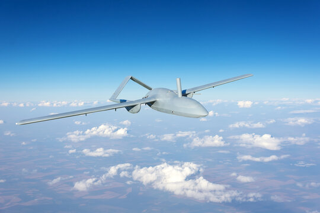
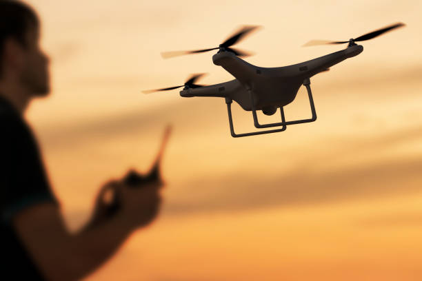
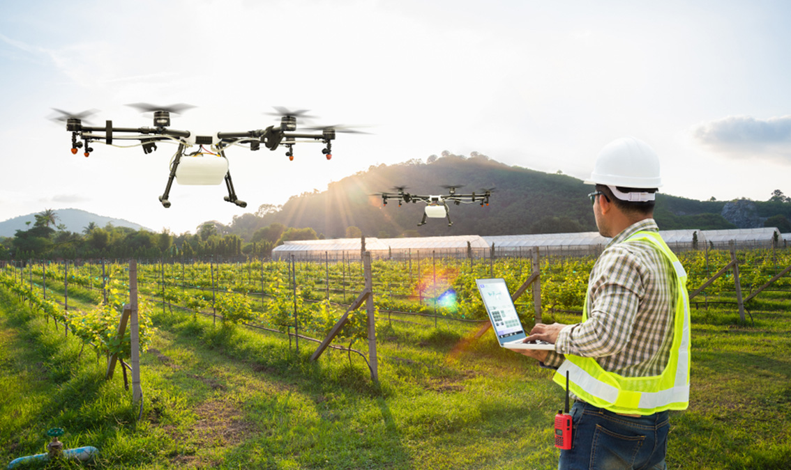

Στην Αρχαία Ελληνική μυθολογία, ο Δαίδαλος ήταν ένας πολύ ικανός αρχιτέκτονας και μηχανικός και τον έβλεπαν ως σύμβολο σοφίας, γνώσης και δύναμης. Ανάμεσα στα πιο διάσημα δημιουργήματά του είναι η ξύλινη αγελάδα της Πασιφάης, ο λαβύρινθος του βασιλιά Μίνωα της Κρήτης, στον οποίο φυλάκισε τον Μινώταυρο και τα φτερά που χρησιμοποίησε μαζί με τον γιό του Ίκαρο για να αποδράσουν από την Κρήτη.
Η εταιρεία μας Daedalus UAV Systems δραστηριοποιείται στον χώρο ανάπτυξης custom πλατφόρμων UAV για πολλές χρήσεις. Προσφέρουμε κάτι μοναδικό για τον Ελλαδικό χώρο και λόγω της επιχειρηματικής ευκαιρίας που παρουσιάζεται, επιθυμούμε να επεκταθούμε στο εξωτερικό σε Ευρωπαϊκές και μη χώρες, καλύπτοντας κενά που υπάρχουν και στην εγχώριά τους βιομηχανία παρόμοιων συστημάτων με custom low cost λύσεις για κάλυψη αναγκών σε διάφορους τομείς όπως η έξυπνη γεωργία, η έρευνα διάσωση, η εναέρια επιτήρηση κλπ.
Η φιλοσοφία μας είναι η δημιουργία custom low cost συστημάτων αξιοποιώντας τεχνολογίες όπως 3d εκτύπωση, συνθετικά υλικά, AI κλπ. Η ομάδα μας αποτελείται από ικανούς αεροναυπηγούς, μηχανολόγους, ηλεκτρολόγους και χημικούς μηχανικούς με χρόνια εμπειρίας στον χώρο, προγραμματιστές και δοκιμαστές/χειριστές άριστα καταρτισμένους και με κίνητρο να “απογειώσουμε” την εταιρία στην διεθνή σκηνή.

Με την παρουσία μας στην έκθεση DEFEA 2025, στην ΔΕΘ και σε άλλες εκθέσεις τεχνολογίας και καινοτομίας, δείξαμε στον ελληνικό και τον παγκόσμιο χώρο τις ικανότητες και το πάθος μας για να παρέχουμε υψηλής ποιότητας και τεχνολογίας λύσεις στους πελάτες μας.
Ενδεικτικά, οι μέχρι τώρα πελάτες μας συμπεριλαμβάνουν τους παρακάτω φορείς και ιδιώτες:
Γενικό Επιτελείο Εθνικής Άμυνας
Γενικό Επιτελείο Εθνικής Φρουράς (Κύπρος)
Ελληνική Αστυνομία
Πυροσβεστικό Σώμα Ελλάδας
Πυροσβεστικό Σώμα Κύπρου
Λιμενικό Σώμα Ελλάδας
Πολιτική Προστασία Κεντρικής Μακεδονίας
Πάνω από 100 ιδιώτες για υπηρεσίες φύλαξης, φωτογραμμετρίας και έξυπνης γεωργίας
Συνολικά έχουμε κατασκευάσει:
250 UAS στρατιωτικής χρήσης, από τα οποία τα 100 έχουν δυνατότητα μεταφοράς οπλισμού
300 Περιφερόμενα πυρομαχικά
500 UAS επιτήρησης
30 UAS πυροσβεστικής χρήσης
30 UAS Έρευνας και Διάσωσης
50 UAS αεροψεκασμού
500 UAS για χρήσεις φωτογραμμετρίας

Όλα τα συστήματα έχουν αναπτυχθεί και δοκιμασθεί κατάλληλα ανάλογα με τις επιθυμητές χρήσεις σε πραγματικές συνθήκες και πλέον παρέχουν ανταγωνιστικό πλεονέκτημα, καθώς υπάρχει άμεση επιχειρησιακή ανατροφοδότηση. Από την στιγμή που θα βγουν από την γραμμή παραγωγής, όλα τα αεροχήματα δοκιμάζονται και ελέγχονται εξονυχιστικά. Ενδεικτικά:
Από τα 1660 UAS που κατασκευάσαμε μέχρι το τελευταίο τρίμηνο του 2024, μόλις τα 15 παρουσίασαν αστοχίες, οι οποίες διορθώθηκαν προληπτικά σε όλα τα ομοειδή συστήματα
Όλα τα στρατιωτικής χρήσης UAS έχουν δοκιμαστεί στο Πεδίο Βολής Κρήτης σύμφωνα με τα τελευταία STANAG του NATO με άριστες αξιολογήσεις
Τα γεωργικής χρήσης UAS δοκιμάζονται καθημερινά από συνεργαζόμενα εκπαιδευτικά ιδρύματα της χώρας και από αγρότες και γεωπόνους
Σκοπός μας είναι η διεύρυνση του πελατολογίου μας τόσο σε κρατικούς όσο και ιδιωτικούς φορείς εντός και εκτός Ελλάδας. Ενδεικτικά, το στρατηγικό πλεονέκτημα που μας προσφέρει η φιλοσοφία παραγωγής δύναται να προσφέρει γρήγορη, ανεξάρτητη και ευέλικτη παραγωγή με δυνατότητα εγχώριας παραγωγής κατόπιν αδείας.
Η παγκόσμια αγορά UAS είναι ταχεία αναπτυσσόμενη, καθώς το εύρος αξιοποίησής τους διευρύνεται συνεχώς. Από απλές αποστολές αεροφωτογραφίας, μέχρι και περίπλοκες αυτόνομες διαδικασίες, όπως έρευνα και διάσωση, αεροπυρόσβεση, κορεσμός εχθρικής αεράμυνας κλπ.
